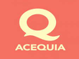
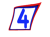

Todos
Deportes
Pelis
Música
Radios
Teleringa: Canales de TV en Vivo
Telefe Capital
Telefe Cordoba
Telefe Tucuman
Telefe Rosario
Telefe Bahia Bl.
Telefe S.F.
Telefe Salta
Telefe Neuquen
Telefe M.D.P.
El Trece TV
El Doce CBA
El Seis Baril.
Canal 10 MDP
Canal 10 G.R.
Canal 9 Chaco

